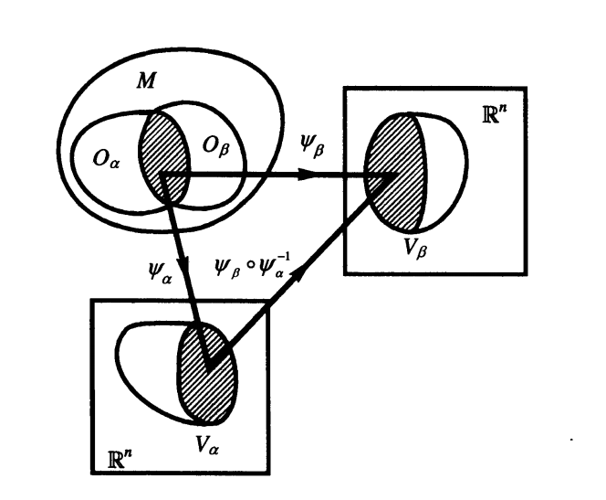
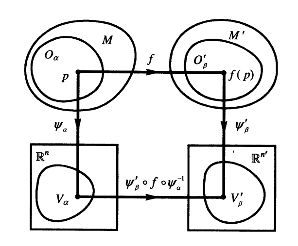

我们对物理学的研究都离不开各个物理现象所处的背景空间。如牛顿力学和电磁学常在\(\mathbb{R}^3\)上研究物体和电场、磁场随时间变化的规律，哈密顿力学和统计物理常在相空间中研究随时间的演化，狭义相对论则以\(\mathbb{R}^4\)的时空为背景等。在物理上我们通常认为背景空间是光滑连续的，但是这样简单默认是不严谨且无效的，因为到目前为止我们并没有给出空间"连续"的定义，更不必谈光滑。本节中我们所谈到的微分流形(简称流形)就是带有微分结构的各种"连续空间"的准确表达。\(\mathbb{R}^n\)是最简单的\(n\)维流形。简而言之，流形就是带有微分结构的拓扑空间，局部看上去像\(\mathbb{R}^n\)，但整体上看可以不是\(\mathbb{R}^n\)。
在开始之前，我们先讲一下什么是自然坐标。所谓自然坐标就是用最显而易见且自然的方法定义的坐标，比如在\(\mathbb{R}^{n}\)中我们用\(n\)个有序实数对定义一个点的坐标，这就是一个自然坐标(请注意，学物理的各位同学请不要将理论力学中所定义的自然坐标和自然坐标系代入本文，研究的对象不同所指故也不同)。
1 微分流形 #
- 定义1：拓扑空间\(M\)若有开覆盖\(\{O_{\alpha}\}\)，即\(M=\underset{\alpha}{\bigcup}O_{\alpha}\)，满足：(1)对每一\(O_\alpha\) \(\exists\)同胚\(\psi_\alpha:O_\alpha\to V_\alpha\)(\(V_\alpha\)是\(\mathbb{R}^n\)用通常拓扑衡量的开子集)；(2)若\(O_\alpha\cap O_\beta\neq\varnothing\)，则复合映射\(\psi_\beta\circ\psi_\alpha^{-1}\)是\(\mathrm{C}^{\infty}\)的，那么这样的拓扑空间称作\(\mathbf{n}\)维微分流形(\(n\)-dimensional differentiable manifold)。

如上图所示，我们可以直观的看出
- \(\psi_{\beta}\circ\psi_{\alpha}^{-1}\)是一个从\(\mathbb{R}^{n}\)的一个子集到\(\mathbb{R}^{n}\)的另一个子集的复合映射，由于\(\mathbb{R}^{n}\)中每个点都有有\(n\)个自然坐标，故\(\psi_{\beta}\circ\psi_{\alpha}^{-1}\)给出了\(n\)个\(n\)元函数，且都是\(\mathrm{C}^{\infty}\)的(在物理里面我们只讨论光滑流形，如果是\(\mathrm{C}^{r}\)流形仅将定义中的\(\mathrm{C}^{\infty}\)替换为\(\mathrm{C}^{r}\)即可)
- 设\(p\in O_{\alpha}\)，则\(\psi_{\alpha}(p)\in\mathbb{R}^{n}\)，故\(\psi_{\alpha}(p)\)有\(n\)个自然坐标，我们可以很自然地把这\(n\)个数称为\(p\)点在映射\(\psi_{\alpha}\)下获得的坐标，把\((O_{\alpha},\psi_{\alpha})\)称为一个(局域)坐标系(coordinate system)，其坐标域(coordinate patch)为\(O_{\alpha}\)
- 若\(p\in O_{\alpha}\cap O_{\beta}\)，分别记\(p\)在两个坐标系下的坐标为\(\{x^{\mu}\}\)和\(\{x'^{\nu}\}\) \((\mu,\nu = 1,2,3,\cdots,n)\)，则我们说由\(\psi_{\beta}\circ\psi_{\alpha}^{-1}\)给出的，体现两组坐标之间关系的\(n\)个\(n\)元函数\(x'^{\mu}=\phi^{\mu}(x^1,\cdots,x^{n})\)称为一个坐标变换(coordinate transformation)，也常被写作\(x'^{\mu}=x'^{\mu}(x^1,\cdots,x^n)\)
- 定义2：在数学上把坐标系\((O_{\alpha},\psi_{\alpha})\)称作图(chart)，同时满足定义1中的(1)(2)条件的图的集合\(\{(O_{\alpha},\psi_{\alpha})\}\)称为图册(atlas)，其中条件(2)又被称为相容性(compatibility)条件，即图册中的任意两个图都是相容的。
对于一个二维流形\(M=(\mathbb{R}^2,\mathscr{T}_u)\)，我们选择坐标域\(O_{\alpha}=\mathbb{R}^2\)，\(\psi_{\alpha}=\)恒等映射，则\(\{(O_{\alpha},\psi_{\alpha})\}\)为只含一个图的图册。我们把像\(\mathbb{R}^2\)这样能用一个坐标域覆盖的流形称为平凡(trivial)流形。当然，我们可以选择另一个图\((O_{\beta},\psi_{\beta})\)来描述\(\mathbb{R}^2\)中的点，但是应当注意\(O_{\beta}\)未必能包括\(\mathbb{R}^2\)中所有的点(例如当选择极坐标时，不能包括当\(r< 0\)时的点)，同理我们知道\(\mathbb{R}^{n}\)是\(n\)维平凡流形。
接下来我们继续讨论关于一些特殊流形可以被几个坐标域覆盖的问题。对于一维流形\(S^1:=\{x\in\mathbb{R}^2||x-o|=1\}\)是以\(o\)为圆心的单位圆周，其拓扑\(\mathscr{S}\)由\(\mathbb{R}^2\)的通常拓扑\(\mathscr{T}_u\)诱导出来。由于\(S^1\)与\(\mathbb{R}\)不同胚，则其上的图册不可能只含有一个图。最简单直接的想法是将\(S^1\)分成四份，分别是上下开半圆和左右开半圆，同胚映射将上下半圆的点映射为其\(x\)坐标，左右半圆的点映射为其\(y\)坐标，显然这样构造的图册可以覆盖\(S^1\)且满足相容性条件。这样我们就能有底气说\(S^1\)是一维流形了，而且从这里来看我们也能体会到为什么说\(S^1\)从局部来看像\(\mathbb{R}\)了。同理，对于\(S^2\)也可以将其分为6个开半球面，从局部来看像\(\mathbb{R}^2\)。
其实上面的两个例子可以通过选取恰当的开覆盖使得图册中的图数量最少，最少时仅有两个图。那么我们就要考虑了，这两个图册本身是否是相容的呢？对于任意的一个拓扑空间\(M\)，若存在两个图册\(\{O_1,\psi_1\},\{O_2,\psi_2\}\)都能将其定义为流形，则这两个图册无非就是这两种关系：
- 两个图册互不相容，即\(\exists O_1,O_2\)使\(O_1\cap O_2\neq\varnothing\)且在\(O_1\cap O_2\)上\(\psi_1\)和\(\psi_2\)不满足相容性条件，这个时候我们说这两个图册把\(M\)定义为两个不同的微分流形，并说这两个图册代表两种不同的微分结构(所谓微分结构其实就是一个极大图册，组成图册的图对应的坐标域构成的集合是\(M\)的一个开覆盖，对该概念的理解不要求一步到位，逐渐体会即可)
- 两个图册相容，这时说这两个图册把\(M\)定义为同一个微分流形(只有一种微分结构)。为方便起见，我们索性将这样相容的图册都放到一起，构造出一个最大的图册，且之后谈到\(M\)是一个流形是总是默认选定了某一个最大的图册作为微分结构，这样就可以进行任意坐标变换
2. 微分同胚 #
微分流形从拓扑空间那里不仅继承了拓扑结构，还发展出了特有的微分结构，因此我们不仅可以谈论两个流形之间的映射是否连续，还可以谈及是否可微，乃至是否是\(\mathrm{C}^{\infty}\)的。考虑两个流形\(M\)和\(M'\)，各为\(n\)和\(n'\)维的，其上的图册为\(\{(O_{\alpha},\psi_{\alpha})\}\)和\(\{(O’_{\beta},\psi ’_{\beta})\}\)，对于映射\(f:M\to M'\)为一个连续映射，其中使得\(\forall p\in M\)有\(f(p)\in M'\)，任取坐标系\((O_{\alpha},\psi_{\alpha})\)和\((O’_{\beta},\psi ’_{\beta})\)，则\(\psi'_{\beta}\circ f\circ\psi^{-1}_{\alpha}\)为从\(V_{\alpha}\equiv\psi_{\alpha}[O_{\alpha}]\sub\mathbb{R}^n\)(也可能是\(V_{\alpha}\)的一个开集)到\(\mathbb{R}^{n'}\)的映射，因此对应于\(n'\)个\(n\)元函数，这些函数的\(\mathrm{C}^r\)性可以定义\(f\)的\(\mathrm{C}^r\)性。

- 定义3：如上图，存在映射\(f:M\to M'\)，如果\(\forall p\in M\)，映射\(\psi'_{\beta}\circ f\circ\psi^{-1}_{\alpha}\)对应的\(n'\)个\(n\)元函数是\(\mathrm{C}^r\)类的，则\(f\)称为\(\mathrm{C}^r\)类映射。(由于图册中各图相容，故该定义与坐标系无关)
我们知道拓扑空间中存一种特殊的映射——同胚映射，同样的我们可以类比定义出在微分流形上的一种特殊映射。
-
定义4：微分流形\(M\)和\(M'\)称为互相微分同胚(diffeomorphic to each other)的当且仅当映射\(\exists f:M\to M'\)满足以下条件时:
-
- \(f\)是一一到上的;
- \(f\)及\(f^{-1}\)是\(\mathrm{C}^{\infty}\)的;
这样的\(f\)称为从\(M\)到\(M'\)的微分同胚映射，简称微分同胚(diffeomorphism)。
-
注意：
-
- 与拓扑之间的同胚不同，微分同胚是对没有其他额外微分结构的流形之间可以提出的最高要求，视为微分同胚的流形可以视作相等;
- 两个流形微分同胚的必要条件是维数相等;
- 定义1中对映射\(\psi_\alpha:O_\alpha\to V_\alpha\)的定义为同胚而不是微分同胚是因为当时并无微分同胚这一概念，但如果把\(O_\alpha\)和\(V_\alpha\)都看作流形，那么\(\psi_\alpha\)其实就是微分同胚。由此我们又可以再次体会到“流形\(M\)在局部看来像\(\mathbb{R}^n\)"。
我们知道在物理学上有所谓电势场、引力场等标量场，究其本源可以发现所谓标量场不过是在空间中对某一个点指定一个实数的映射罢了，唯一的区别是不同的标量场中点与实数的对应关系表达式存在一定区别。为此我们可以借助刚学的微分同胚来对"标量场"进行抽象化：
- 定义5：我们称映射\(f:M\to\mathbb{R}\)为\(\mathbf{M}\)上的函数(function on \(\mathbf{M}\))或\(\mathbf{M}\)上的标量场(scalar field on \(\mathbf{M}\))。如果\(f\)为\(\mathrm{C}^{\infty}\)的，则称其为\(\mathbf{M}\)上的光滑函数。记\(M\)上的全体光滑函数的集合为\(\mathscr{F}_M\)，在无歧义时简记为\(\mathscr{F}\)。当然在无特殊声明今后均指光滑函数。
这样就定义了抽象化的标量场。自然的我们会想问这样定义的标量场与平时在欧氏空间中所用的标量场有什么区别呢？重点在于此处定义的标量场需要结合一个坐标系\((O_\alpha,\psi_\alpha)\)，这样我们才能得到一个熟悉的\(n\)元函数\(F(x^1,x^2,\cdots,x^n)\)。由于坐标系中的一点\(p\)都被一组确定的\(n\)个坐标决定，因而\(f(p)\)可以得到唯一的实数。同样的，若\(f\)与另一个坐标系结合会得到另一个\(n\)元函数\(F(x'^1,x'^2,\cdots,x'^n)\)。可见标量场对应的多元函数是坐标依赖的(这个词将在后面的内容再次出现，读者在此可以先体会一下)，因而需要区分标量场\(f\)和与坐标系结合后产生的\(n\)元函数\(F\)。
最后，有关流形的计算就自然来到了卡氏积。本文无意过多讨论此点，只是不加证明地给出两个流形\(M\)和\(N\)之间的卡氏积\(M\times N\)也为流形和\(\dim(M\times N)=\dim M+\dim N\)的结论。
下一篇文章我们将开始进行对矢量的讨论，为了能够更好地理解下文的内容笔者在此列出矢量空间的定义。特别注意：凡是满足矢量空间性质的元素我们都可以称之为矢量。
定义：实数域上的一个矢量空间(vector space)是一个集合\(V\)配以两个映射\(V\times V\to V\)(加法(addition))及\(\mathbb{R}\times V\to V\)(数乘(scalar multiplication))，满足：
- \(v_1+v_2=v_2+v_1,\quad\forall v_1,v_2\in V\)
- \((v_1+v_2)+v_3=v_1+(v_2+v_3),\quad\forall v_1,v_2,v_3\in V\)
- \(\exists\mathbf{0}\in V,\ \mathbf{0}+v=v,\quad\forall v\in V\)
- \(\alpha_1(\alpha_2v)=(\alpha_1\alpha_2)v,\quad\forall v\in V,\ \forall\alpha_1,\alpha_2\in\mathbb{R}\)
- \((\alpha_1+\alpha_2)v=\alpha_1v+\alpha_2v,\quad\forall v\in V,\ \forall\alpha_1,\alpha_2\in\mathbb{R}\)
- \(\alpha(v_1+v_2)=\alpha v_1+\alpha v_2,\quad\forall v_1,v_2\in V,\ \forall\alpha\in\mathbb{R}\)
- \(1\cdot v=v,\quad 0\cdot v =0,\quad\forall v\in V\)